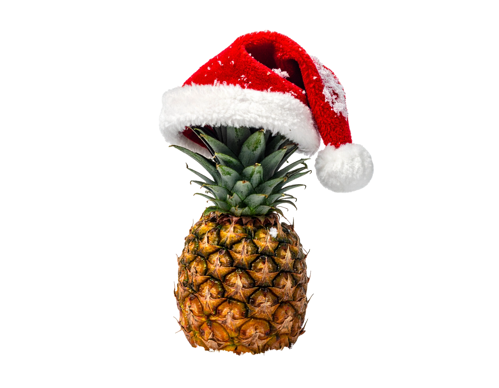
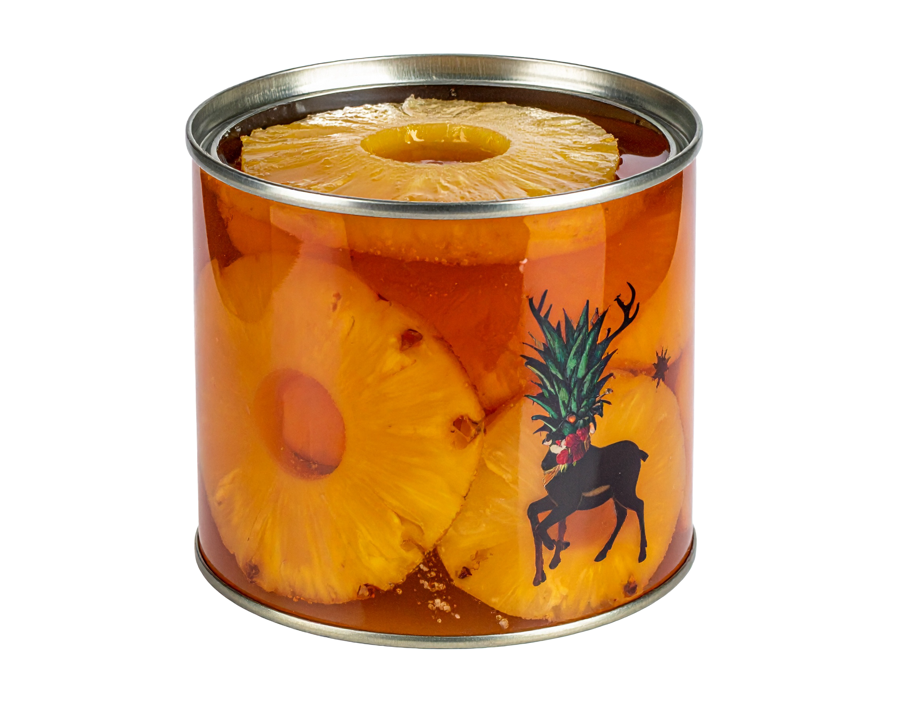

Ternera a la piña,Sufléde piña y Sorbete a la piña

Lubina con piña, Tarta de queso a la piña y polvorón de piña

La Navidad es una época que evoca aromas, colores y sabores únicos, y entre ellos la piña se ha convertido en un símbolo inesperado pero encantador. Su forma exótica y su dulzura tropical contrastan con el frío invernal, aportando frescura a las mesas festivas. En muchos hogares, la piña se utiliza para decorar centros de mesa o como ingrediente en platos navideños, recordándonos que la celebración también es diversidad y mezcla de culturas. Así, esta fruta dorada se convierte en un toque alegre que ilumina la tradición con un guiño a lo inesperado.